คู่มือการใช้งานระบบ ThaiMed Scheduler
ระบบจัดการคิวและนัดหมายบริการแพทย์แผนไทย สำหรับ "เรือนสมุนไพร" — เชื่อมต่อข้อมูลผู้ป่วย ผู้ให้บริการ และรายการหัตถการโดยตรงจากระบบ HOSxP ของร้าน พร้อมจัดคิวหน้าร้าน ออกบัตรคิว และสรุปรายงานยอดให้บริการแบบเรียลไทม์
เชื่อมต่อระบบ HOSxP
ขั้นตอนแรกก่อนเข้าใช้งานระบบทุกครั้ง
เมื่อเปิดระบบ ThaiMed Scheduler ครั้งแรก จะพบหน้าจอให้เชื่อมต่อกับระบบ HOSxP ของร้านก่อนเสมอ เนื่องจากข้อมูลผู้ป่วย ผู้ให้บริการ และรายการหัตถการทั้งหมด ดึงมาจากฐานข้อมูล HOSxP โดยตรง
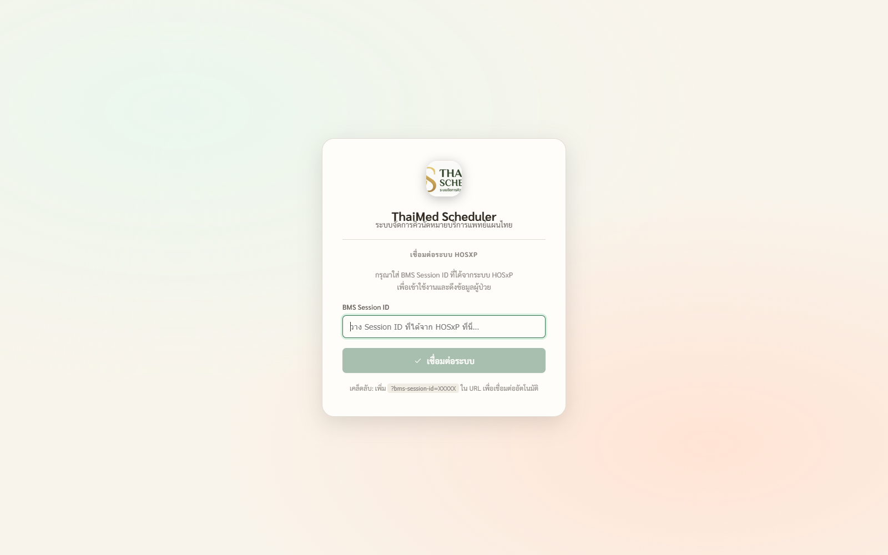
วิธีเชื่อมต่อ
- ขอ BMS Session ID จากหน้าจอระบบ HOSxP ของร้าน (เจ้าหน้าที่ดูแลระบบ HOSxP เป็นผู้ให้)
- วาง Session ID ลงในช่อง BMS Session ID
- กดปุ่ม ✓ เชื่อมต่อระบบ
เชื่อมต่ออัตโนมัติ: เพิ่ม ?bms-session-id=XXXXX ต่อท้าย URL ของระบบ
เพื่อให้เชื่อมต่อทันทีโดยไม่ต้องพิมพ์เอง — เหมาะสำหรับตั้งเป็นลิงก์ลัดหน้าจอหลักของเครื่องหน้าร้าน
เมื่อเชื่อมต่อสำเร็จครั้งหนึ่งแล้ว ระบบจะจดจำการเชื่อมต่อไว้ในเบราว์เซอร์นาน 7 วัน จึงไม่ต้องกรอก Session ID ซ้ำทุกวัน จนกว่าจะกดออกจากระบบหรือครบกำหนด
ภาพรวมหน้าจอหลัก
ทำความรู้จักเมนูและส่วนต่าง ๆ ก่อนเริ่มใช้งาน
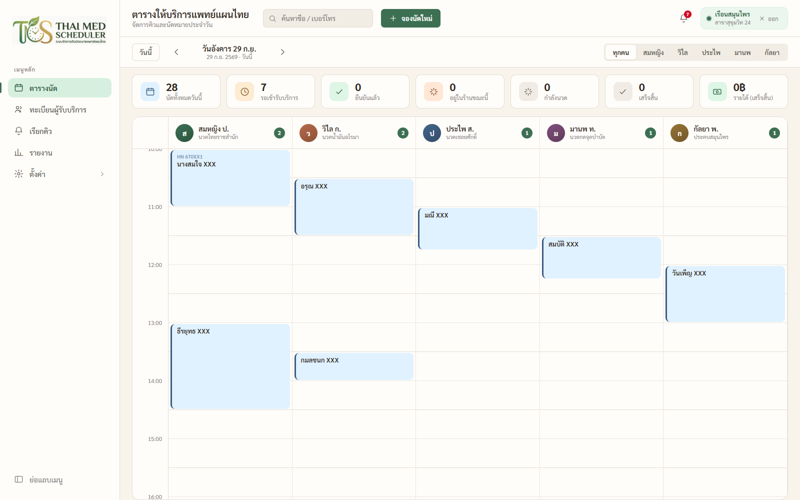
เมนูหลัก (ซ้าย)
ตารางนัด · ทะเบียนผู้รับบริการ · เรียกคิว · รายงาน และเมนู "ตั้งค่า" ที่ขยายเพิ่มได้
ช่องค้นหา + ปุ่มจองนัด
ค้นหานัดหมายด้วยชื่อ/เบอร์โทร และปุ่มเขียวสำหรับจองนัดใหม่ อยู่มุมขวาบนของทุกหน้า
แถบเลือกวันที่
ปุ่ม "วันนี้" และลูกศรซ้าย/ขวา สำหรับสลับดูตารางวันอื่น
สถานะเชื่อมต่อ HOSxP
มุมขวาบนแสดงชื่อร้าน/สาขาที่เชื่อมต่ออยู่ พร้อมปุ่ม "ออก" เพื่อยกเลิกการเชื่อมต่อ
สัญลักษณ์สถานะนัดหมาย
สีของบัตรนัดและป้ายสถานะมีความหมายเดียวกันทุกหน้าจอในระบบ (ตารางนัด, เรียกคิว, ทะเบียนผู้รับบริการ):
จองนัดใหม่
ขั้นตอนสร้างนัดหมายใหม่ให้ลูกค้า
ขั้นตอนที่ 1 — เปิดฟอร์มจองนัด
กดปุ่ม + จองนัดใหม่ มุมขวาบนของหน้าตารางนัด หรือคลิกที่ช่องว่างในตารางตรงเวลา/ผู้ให้บริการที่ต้องการ เพื่อให้ระบบกรอกเวลาและผู้ให้บริการล่วงหน้าให้อัตโนมัติ
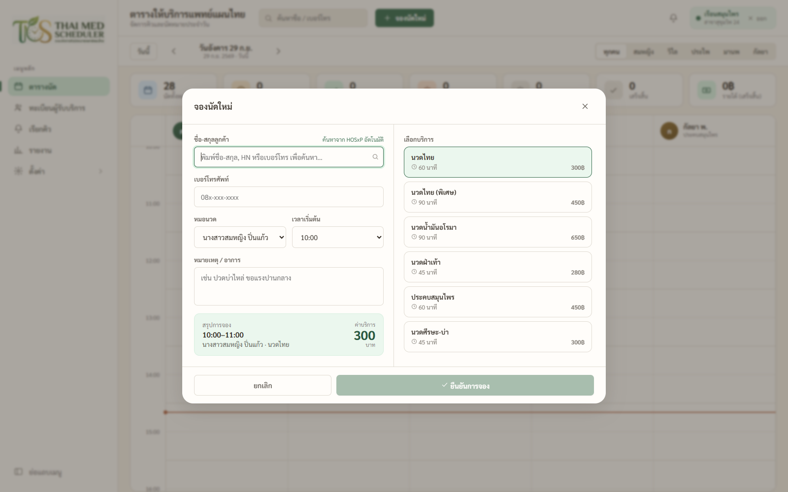
ขั้นตอนที่ 2 — ค้นหาลูกค้าจาก HOSxP
พิมพ์ชื่อ, HN หรือเบอร์โทรในช่อง ชื่อ-สกุลลูกค้า ตั้งแต่ 2 ตัวอักษรขึ้นไป ระบบจะค้นหาในฐานข้อมูลผู้ป่วยของ HOSxP ให้อัตโนมัติ (ไม่ต้องกดปุ่มค้นหา) และแสดงรายชื่อพร้อม HN สิทธิการรักษา และเบอร์โทรให้เลือก
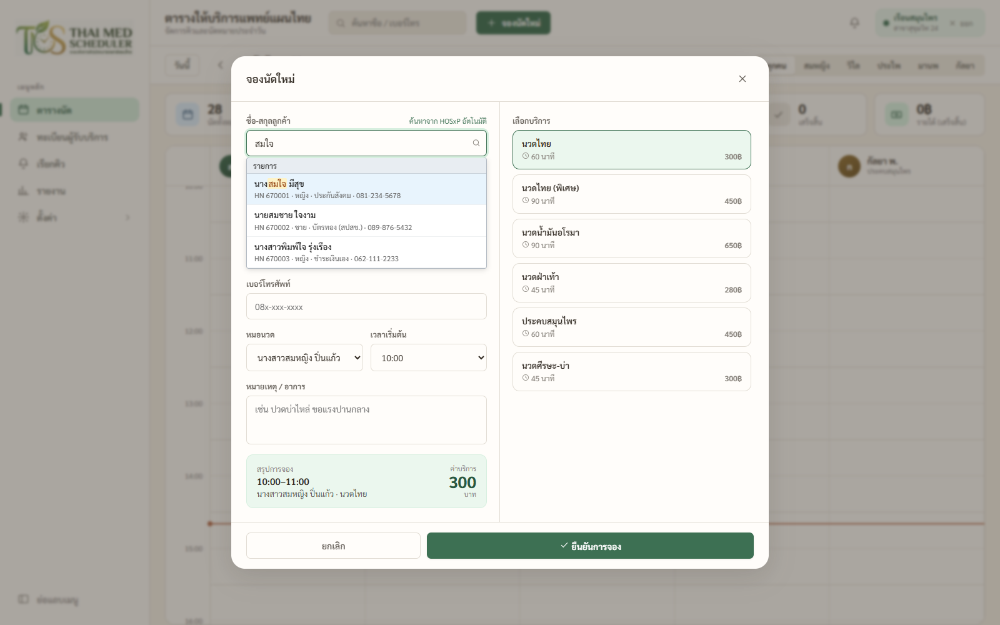
หากไม่พบข้อมูลผู้ป่วยในระบบ หรือไม่ต้องการผูกกับ HN สามารถพิมพ์ชื่อ-นามสกุลลูกค้าลงไปตรง ๆ ได้เช่นกัน ระบบจะบันทึกเป็นนัดหมายแบบไม่ผูก HN
ขั้นตอนที่ 3 — เลือกผู้ให้บริการ เวลา และบริการ
เลือก หมอนวด และ เวลาเริ่มต้น จากช่องดรอปดาวน์ หากร้านมีการตั้งค่าเตียงบริการไว้ จะมีช่อง เตียงบริการ เพิ่มให้เลือกด้วย (เตียงที่ไม่ว่างในช่วงเวลานั้นจะถูกปิดไม่ให้เลือก) จากนั้นเลือกรายการบริการจากการ์ดทางฝั่งขวา ระบบจะคำนวณช่วงเวลาสิ้นสุดและราคาให้อัตโนมัติในกล่องสรุปด้านล่าง
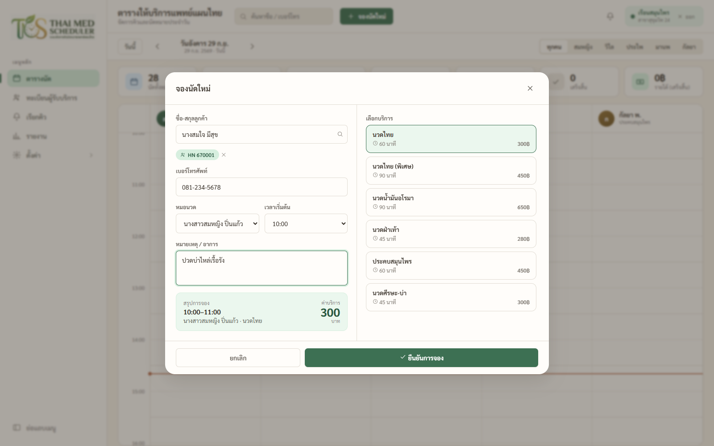
กดปุ่ม ✓ ยืนยันการจอง เพื่อบันทึก ระบบจะตรวจสอบให้อัตโนมัติก่อนบันทึกเสมอว่า:
- เวลาของผู้ให้บริการไม่ชนกัน — หากชนกัน ระบบจะแจ้งเตือนและไม่ยอมให้บันทึกจนกว่าจะเปลี่ยนเวลาหรือผู้ให้บริการ
- เตียงบริการไม่ถูกจองซ้ำ — เช่นเดียวกับผู้ให้บริการ
- ลูกค้าคนเดิม (HN เดียวกัน) มีนัดในวันเดียวกันอยู่แล้วหรือไม่ — กรณีนี้เป็นเพียงคำเตือน ยังสามารถกด "จองต่อ" เพื่อจองซ้ำได้หากตั้งใจ
ขั้นตอนที่ 4 — บัตรคิวนัดหมาย
เมื่อจองสำเร็จ ระบบจะออก บัตรคิวนัดหมาย ให้ทันที พร้อมหมายเลขคิวประจำวัน (เช่น A01, A02, …) กดปุ่ม 🖶 พิมพ์บัตรคิว เพื่อพิมพ์มอบให้ลูกค้า หรือกด "ปิด" หากไม่ต้องการพิมพ์
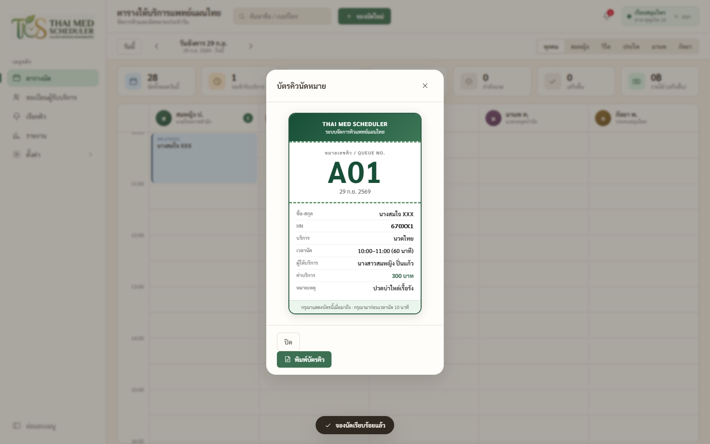
แก้ไข / อัปเดตสถานะนัดหมาย
เปลี่ยนเวลา ผู้ให้บริการ หรืออัปเดตความคืบหน้าของนัด
คลิกที่การ์ดนัดหมายใด ๆ บนตารางนัด เพื่อเปิดหน้าต่าง แก้ไขการจองนัด ในนี้แสดงข้อมูลลูกค้า บริการ เวลา ราคา และหมายเหตุที่บันทึกไว้ สามารถเปลี่ยนผู้ให้บริการ เวลา เตียง หรือบริการที่เลือกได้ทันที
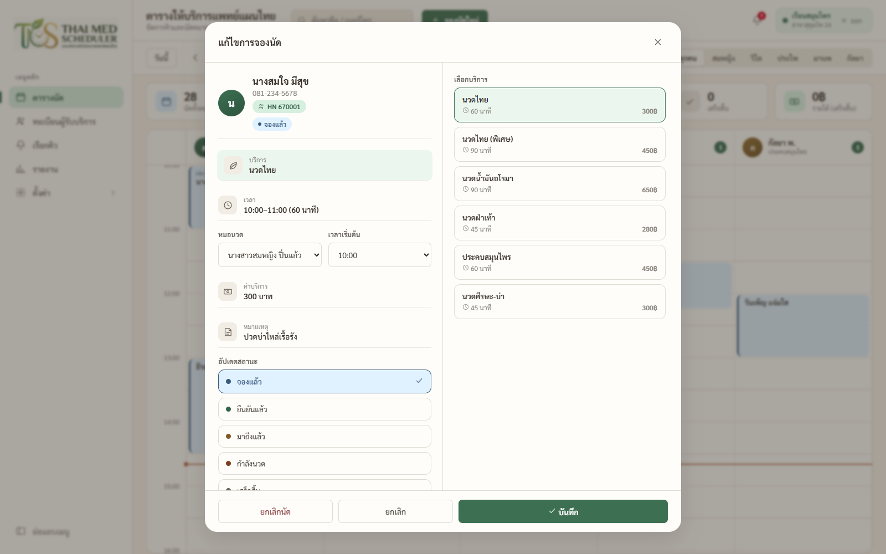
อัปเดตสถานะนัด
ในส่วน อัปเดตสถานะ คลิกเลือกสถานะที่ตรงกับความคืบหน้าจริงของลูกค้า ตามลำดับ จองแล้ว → ยืนยันแล้ว → มาถึงแล้ว → กำลังนวด → เสร็จสิ้น (สามารถคลิกข้ามลำดับได้ ไม่บังคับต้องไล่ตามลำดับ) แล้วกด ✓ บันทึก
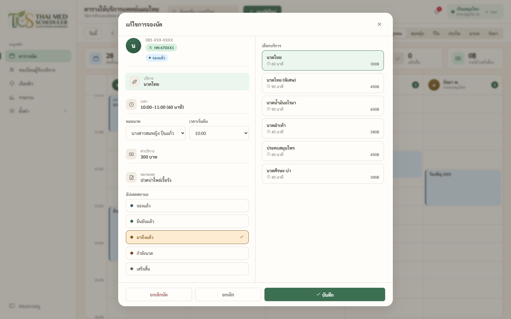
เมื่อบันทึกแล้ว สีของการ์ดนัดหมายบนตารางจะเปลี่ยนตามสถานะทันที ทำให้มองเห็นภาพรวมหน้าร้านได้ในพริบตา และตัวเลขสรุป "อยู่ในร้านขณะนี้ / กำลังนวด / เสร็จสิ้น" ที่แถบสถิติด้านบนจะอัปเดตตามไปด้วย
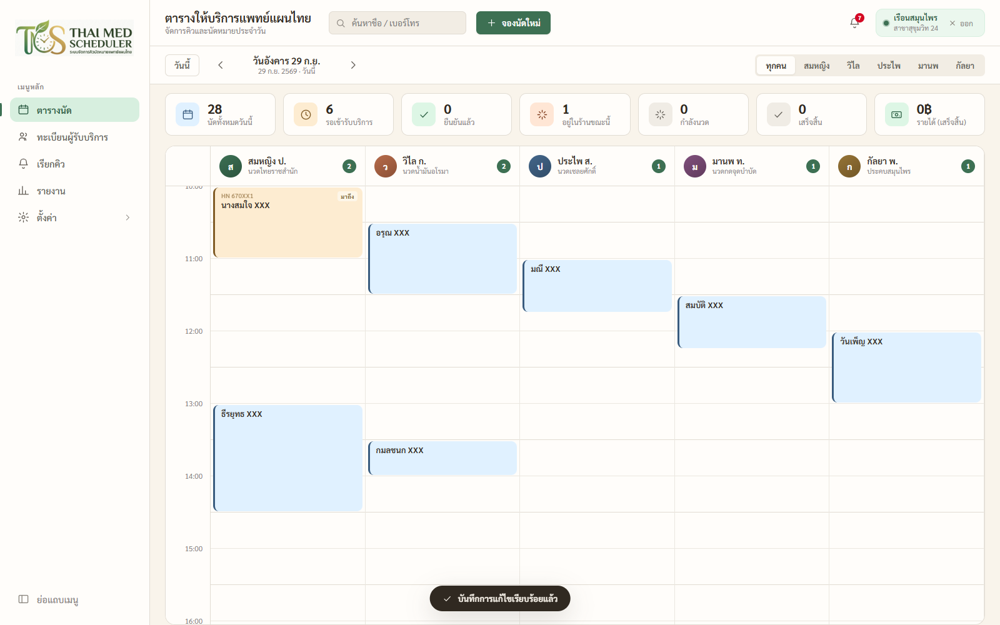
ยกเลิกนัด: กดปุ่ม "ยกเลิกนัด" มุมล่างซ้ายของหน้าต่างแก้ไข หากลูกค้าไม่มาตามนัด การ์ดจะแสดงเป็นสีแดงขีดฆ่าบนตาราง แต่ยังเก็บประวัติไว้ในระบบ ไม่ได้ลบทิ้ง
เรียกคิว
จัดคิวหน้าร้าน เรียกลูกค้าด้วยเสียง และจอแสดงผลรอคิว
ไปที่เมนู เรียกคิว ทางซ้าย จะเห็นคิวของวันนั้นแบ่งเป็น 4 คอลัมน์ตามสถานะ: รอเรียกคิว → เรียกแล้ว → กำลังให้บริการ → เสร็จสิ้น พร้อมหมายเลขคิว (A01, A02, …) ที่ระบบออกให้อัตโนมัติตามลำดับการจอง
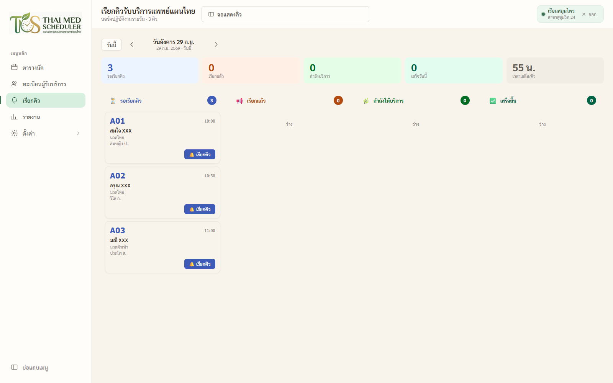
เรียกลูกค้าเข้ารับบริการ
กดปุ่ม 🔔 เรียกคิว บนการ์ดคิวที่ต้องการ ระบบจะ:
- ย้ายคิวนั้นไปคอลัมน์ "เรียกแล้ว" และแสดงในแถบ "กำลังเรียกคิว" ตัวใหญ่ด้านบน
- พูดเรียกหมายเลขคิวเป็นภาษาไทย ผ่านลำโพงเครื่องโดยอัตโนมัติ (ต้องมีลำโพงและอินเทอร์เน็ต)
- อัปเดตจอแสดงคิวหน้าร้าน (ถ้าเปิดไว้) ให้ทันที
หากลูกค้ายังไม่ได้ยิน กดปุ่ม 🔁 เรียกซ้ำ ที่แถบ "กำลังเรียกคิว" เพื่อพูดเรียกซ้ำได้โดยไม่ต้องเรียกคิวใหม่
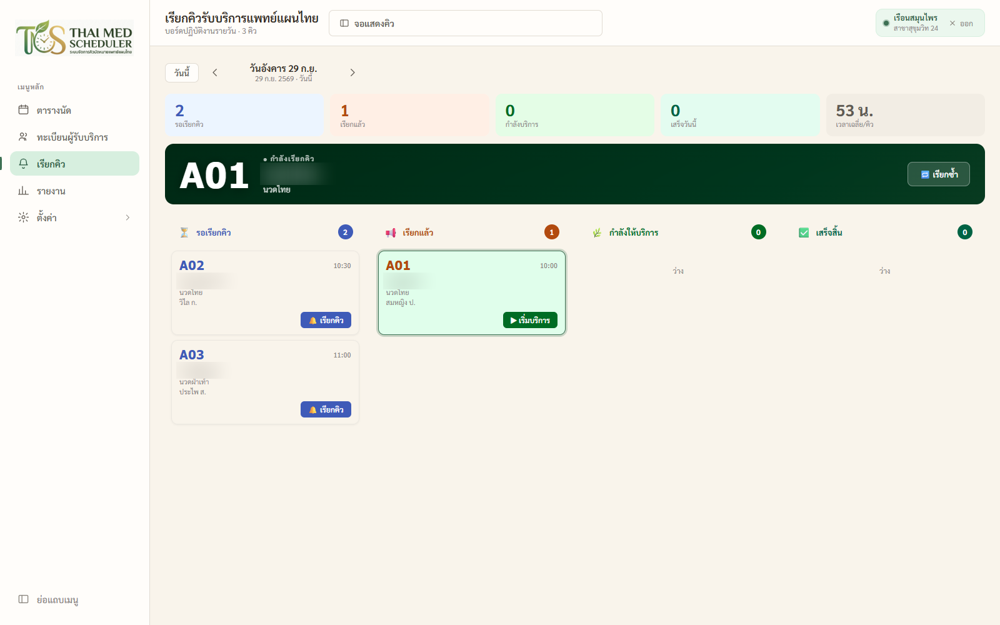
เมื่อลูกค้าเริ่มนวด กดปุ่ม ▶ เริ่มบริการ เพื่อย้ายไปคอลัมน์ "กำลังให้บริการ" และเมื่อเสร็จแล้วกด ✓ เสร็จสิ้น
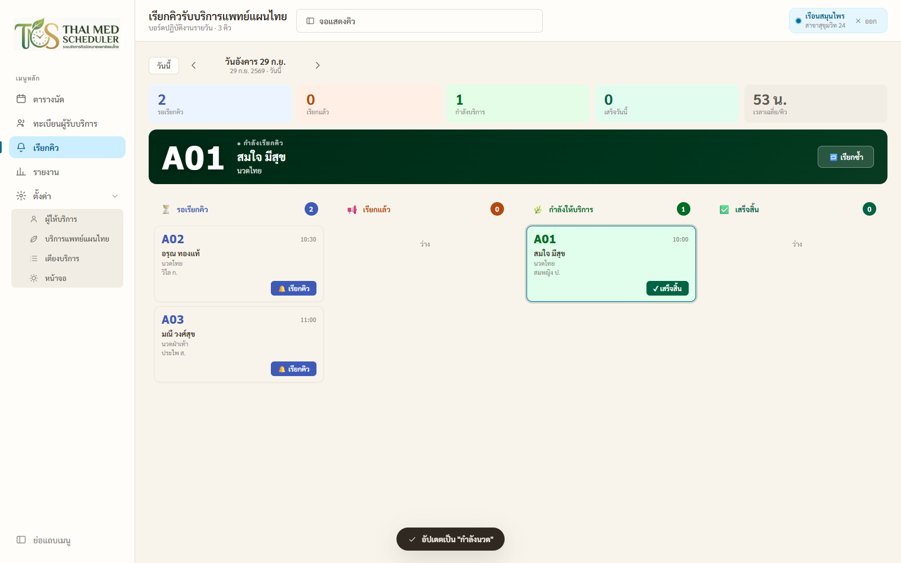
จอแสดงคิวหน้าร้าน
กดปุ่ม 🗔 จอแสดงคิว มุมบนของหน้าเรียกคิว เพื่อเปิดหน้าต่างแยกสำหรับฉายขึ้นจอทีวี/มอนิเตอร์ ในโซนรอคิวของลูกค้า หน้าจอนี้จะอัปเดตหมายเลขคิวปัจจุบันแบบเรียลไทม์ พร้อมนาฬิกาและข้อความต้อนรับวิ่งด้านล่าง และปิดบังนามสกุลลูกค้าไว้เพื่อความเป็นส่วนตัว (แสดงเฉพาะชื่อ เช่น "นิภา XXX")
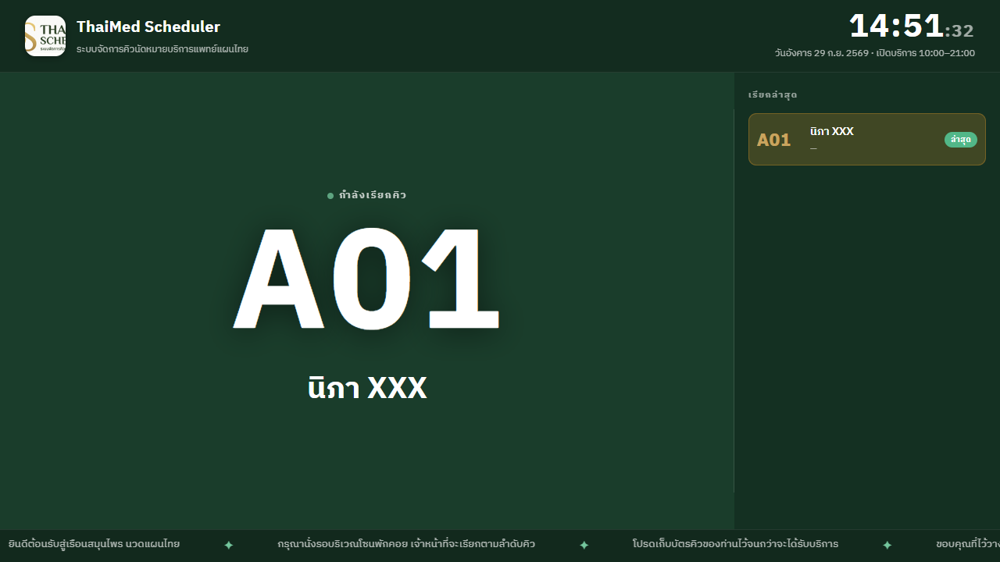
ควรเปิดหน้าต่างจอแสดงคิวจากปุ่มนี้ในเบราว์เซอร์เครื่องเดียวกับที่ใช้เรียกคิว (หรือเปิดผ่านลิงก์ที่ระบบสร้างให้) เพื่อให้ทั้งสองหน้าจอซิงก์ข้อมูลกันได้ถูกต้อง
ทะเบียนผู้รับบริการ
ประวัติการจองนัดทั้งหมด ค้นหาและส่งออกข้อมูล
เมนู ทะเบียนผู้รับบริการ รวมรายการนัดหมายทุกวัน (ไม่ใช่แค่วันนี้) ไว้ในตารางเดียว ใช้ค้นหาประวัติลูกค้าเก่า ตรวจสอบยอดค่าบริการ หรือดูค่าตอบแทนผู้ให้บริการแต่ละคน
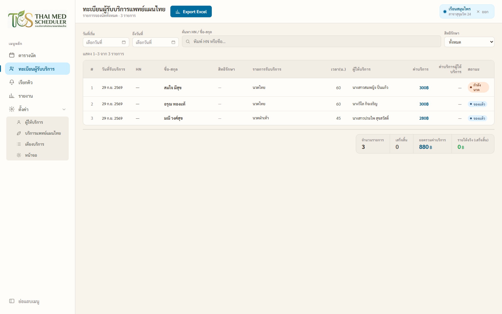
ตัวกรองที่ใช้ได้
- วันที่เริ่ม / ถึงวันที่ — เลือกช่วงวันที่ต้องการดูย้อนหลัง
- ค้นหา HN / ชื่อ-สกุล — พิมพ์คำค้นเพื่อกรองรายชื่อ
- สิทธิรักษา — กรองตามสิทธิการรักษาของลูกค้า (ดึงจาก HOSxP)
ด้านล่างตารางสรุป จำนวนรายการ, จำนวนที่เสร็จสิ้น, ยอดรวมค่าบริการ, รายได้จริง (นับเฉพาะนัดที่เสร็จสิ้นแล้ว) และยอดค่าตอบแทนผู้ให้บริการรวม (หากตั้งค่าไว้)
กดปุ่ม 📊 Export Excel มุมบนขวา เพื่อดาวน์โหลดรายการที่กรองอยู่เป็นไฟล์ตารางที่เปิดได้ตรงใน Excel ทันที
ตั้งค่า — ผู้ให้บริการ
ทะเบียนหมอนวด ดึงข้อมูลตรงจาก HOSxP
เมนู ตั้งค่า → ผู้ให้บริการ แสดงรายชื่อผู้ให้บริการ (หมอนวด) ทั้งหมดของร้าน ซึ่งดึงมาจากระบบ HOSxP โดยตรง หน้านี้เป็นหน้าแสดงผลอย่างเดียว — การเพิ่ม/แก้ไข/ลบผู้ให้บริการ ต้องทำที่ระบบ HOSxP เท่านั้น
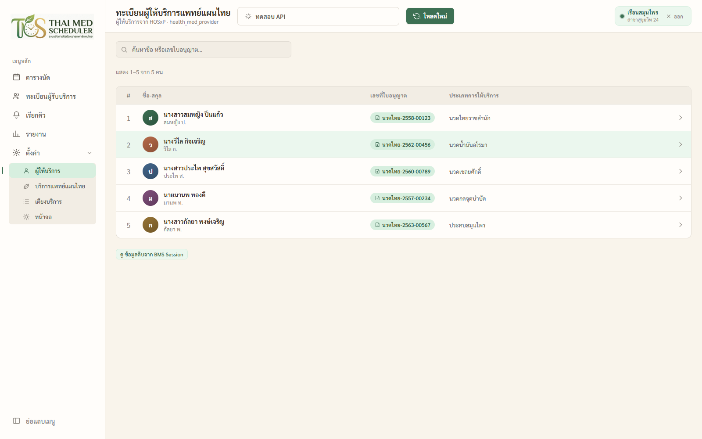
คลิกที่แถวรายชื่อ เพื่อดูรายละเอียดฉบับเต็มของผู้ให้บริการคนนั้นตามที่บันทึกไว้ใน HOSxP
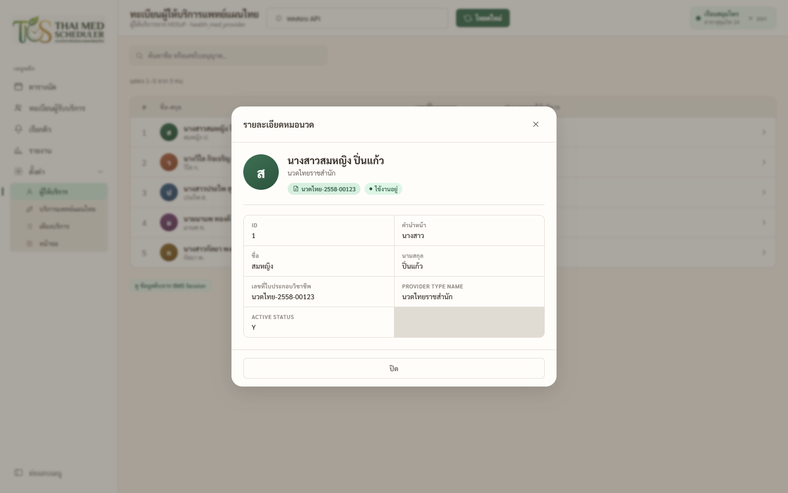
สำหรับผู้ดูแลระบบ: ใช้ปุ่ม "โหลดใหม่" เพื่อดึงข้อมูลล่าสุดจาก HOSxP และปุ่ม "ทดสอบ API" เพื่อตรวจสอบการเชื่อมต่อ หากระบบไม่สามารถดึง URL การเชื่อมต่ออัตโนมัติได้ หน้านี้จะมีช่องให้กรอก URL และรหัสเชื่อมต่อ HOSxP ด้วยตนเอง — เป็นขั้นตอนของฝ่าย IT ไม่ใช่การใช้งานประจำวัน
ตั้งค่า — บริการแพทย์แผนไทย
ทะเบียนรายการหัตถการและค่าตอบแทนผู้ให้บริการ
แสดงรายการหัตถการ/บริการทั้งหมดพร้อมราคาและระยะเวลา ดึงจาก HOSxP เช่นเดียวกับหน้าผู้ให้บริการ (ชื่อ ราคา และเวลาแก้ไขได้ที่ระบบ HOSxP เท่านั้น) รายการที่ปิดใช้งานจะมีป้าย "ปิด" สีแดงกำกับ
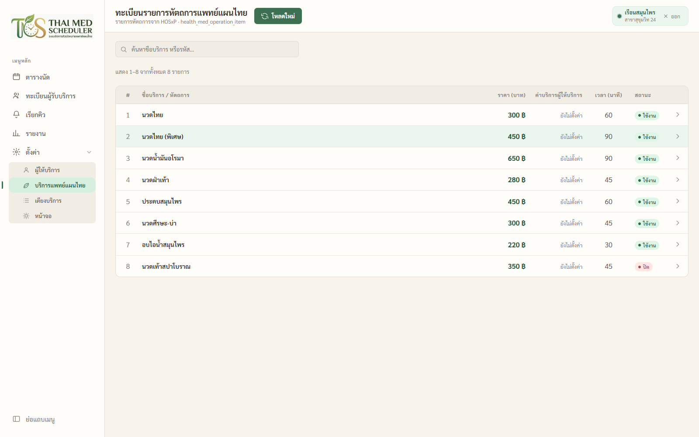
ตั้งค่าค่าตอบแทนผู้ให้บริการ
คลิกรายการบริการเพื่อเปิดหน้าต่างรายละเอียด แล้วกรอกจำนวนเงินในช่อง ค่าบริการผู้ให้บริการ (ค่าตอบแทนที่ร้านจ่ายให้หมอนวดต่อครั้ง) แล้วกด บันทึก — เป็นค่าเดียวในหน้านี้ที่แก้ไขได้จากระบบนี้โดยตรง ใช้คำนวณยอดค่าตอบแทนในหน้าทะเบียนผู้รับบริการและรายงาน
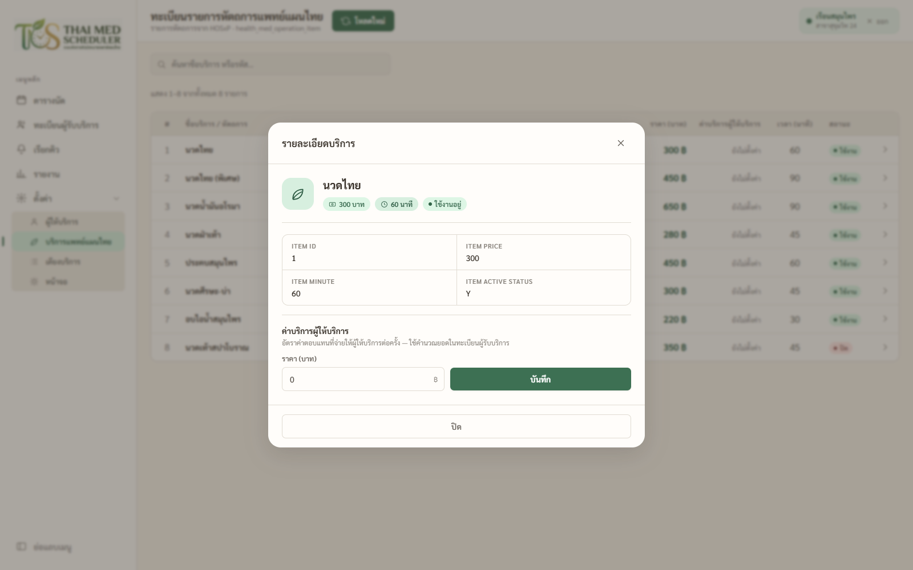
ตั้งค่า — เตียงบริการ
จัดการเตียง/พื้นที่ให้บริการของร้าน (แก้ไขได้เต็มรูปแบบในระบบนี้)
ต่างจากหน้าผู้ให้บริการและบริการ หน้านี้จัดการข้อมูลของระบบเอง ไม่ได้ผูกกับ HOSxP จึงเพิ่ม แก้ไข เปิด/ปิดเตียงได้อิสระ เหมาะสำหรับร้านที่มีหลายเตียง/ห้องนวด และต้องการกันเตียงชนกันตอนจองคิว
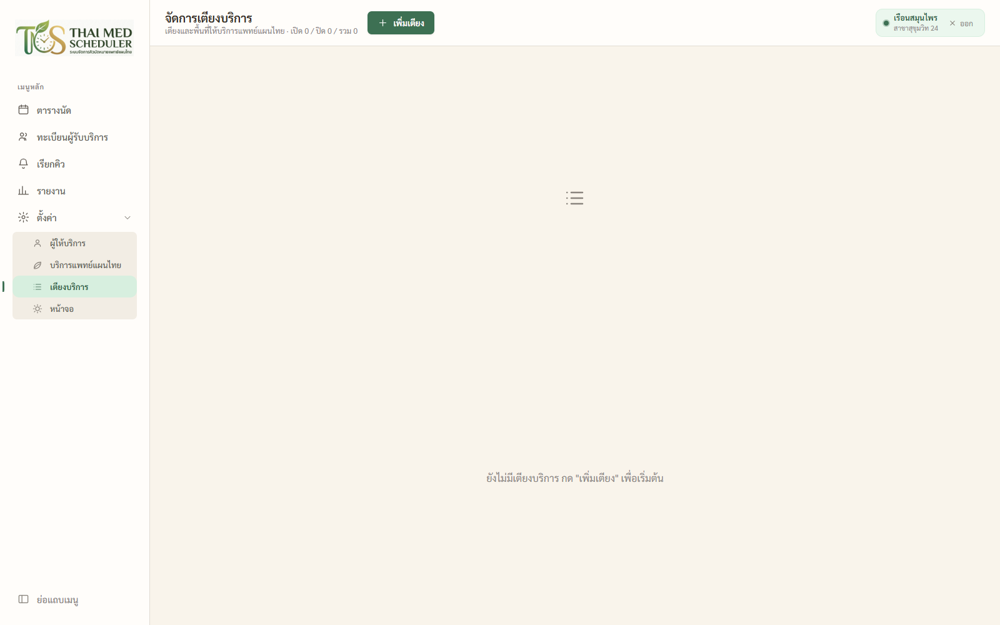
กดปุ่ม + เพิ่มเตียง แล้วกรอก:
- ชื่อเตียง / หมายเลขเตียง — เช่น เตียง 1, เตียง A, VIP 01
- ห้อง / ตำแหน่ง — เช่น ห้องนวด 1, ชั้น 2
- หมายเหตุ — เช่น สำหรับผู้พิการ, มีอ่างน้ำ
- Active — ติ๊กถูกหากพร้อมให้บริการ; หากปิดไว้ เตียงนี้จะไม่ปรากฏในฟอร์มจองนัด
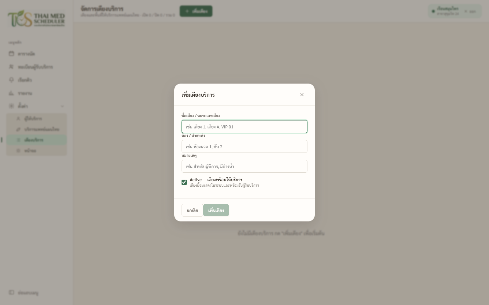
เมื่อบันทึกแล้ว เตียงจะปรากฏในรายการ พร้อมไอคอนแก้ไข (แก้ไขข้อมูล) และไอคอนตา (เปิด/ปิดการใช้งานชั่วคราว)
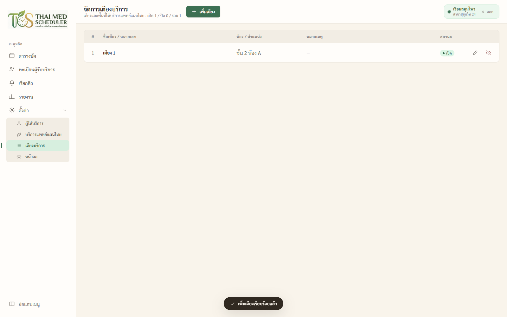
ตั้งค่า — หน้าจอ
ปรับธีมสี ฟอนต์ และขนาดตารางตามใจชอบ
เมนู ตั้งค่า → หน้าจอ ปรับรูปลักษณ์ของระบบได้ 3 ส่วน คลิกเลือกแล้วมีผลทันที ไม่ต้องกดบันทึก:
ธีมสี
เลือกได้ 8 ธีม เช่น สมุนไพร (ค่าเริ่มต้น), มหาสมุทร, ดอกชบา, กลางคืน (โหมดมืด)
ฟอนต์
เลือกฟอนต์ไทย 4 แบบ: Sarabun, Prompt, Noto Sans Thai, IBM Plex Sans Thai
ขนาดตาราง
ปรับความสูงของแต่ละช่องเวลาในตารางนัด: กระชับ / ปกติ / โปร่ง
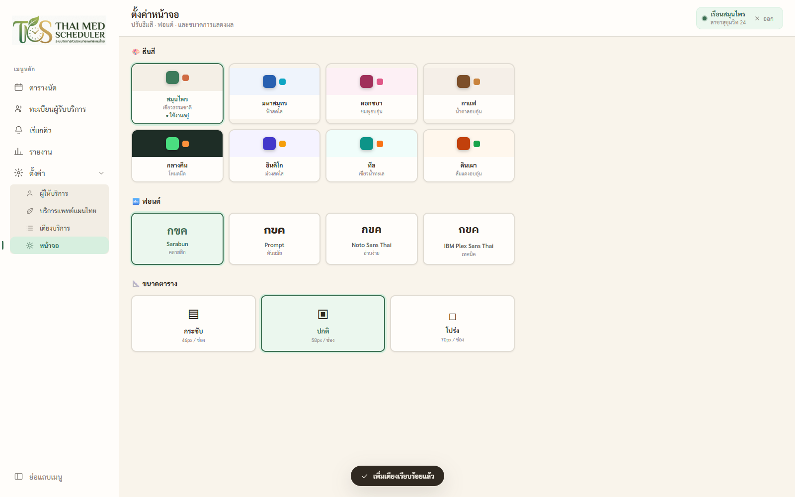
ตัวอย่างเมื่อเปลี่ยนเป็นธีม "มหาสมุทร" สีของทั้งระบบจะเปลี่ยนเป็นโทนฟ้าทันที:
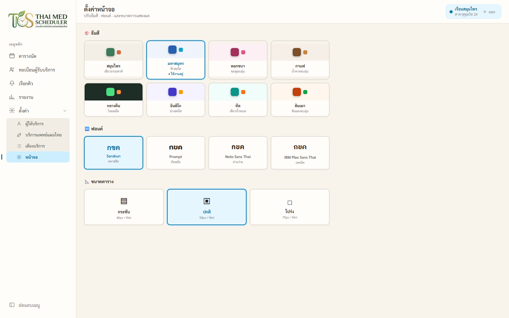
การตั้งค่าหน้าจอบันทึกแยกไว้ในเบราว์เซอร์ของแต่ละเครื่อง — หากเปลี่ยนธีมที่เครื่อง Reception จะไม่กระทบหน้าจอของเครื่องอื่นในร้าน
รายงาน
ติดตามการให้บริการวันนี้ และดูสถิติย้อนหลัง
เมนู รายงาน แบ่งเป็น 2 แท็บที่มุมบน:
🟢 ติดตามการให้บริการ (วันนี้)
ภาพรวมของวันนี้แบบเรียลไทม์ — จำนวนผู้รับบริการ คิวที่รอ กำลังให้บริการ ภาระงานของผู้ให้บริการแต่ละคน และคิวถัดไปที่รอดำเนินการ คลิกที่การ์ดผู้ให้บริการคนใดก็ได้เพื่อเปิดฟอร์มจองนัดใหม่ให้คนนั้นโดยตรง
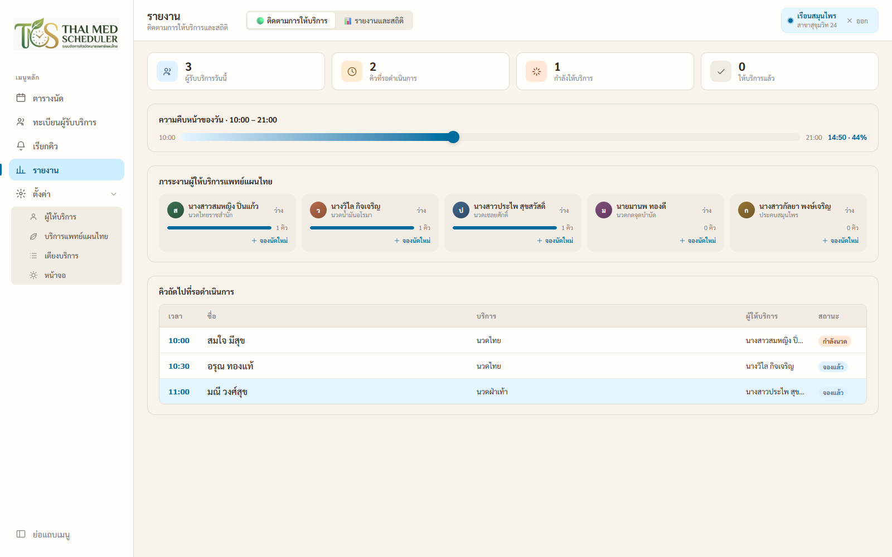
📊 รายงานและสถิติ (ย้อนหลัง)
สถิติเชิงลึกจากประวัติการใช้งานในเครื่องนี้ ได้แก่ กราฟผู้รับบริการ/รายได้ 14 วันล่าสุด, บริการยอดนิยม, สถิติย้อนหลัง 6 เดือน, ภาระงานสะสมของผู้ให้บริการแต่ละคน (รวมค่าตอบแทน), ช่วงเวลาที่มีการจองมากที่สุด, อัตราการมาตามนัด/ยกเลิก และรายชื่อลูกค้าประจำ
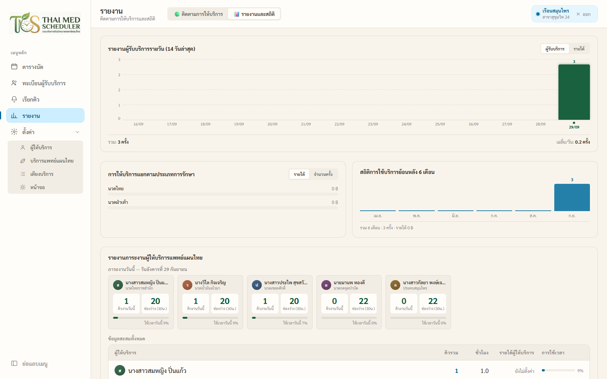
สถิติย้อนหลังในแท็บนี้เก็บไว้ในเบราว์เซอร์ของเครื่องที่ใช้งาน หากล้างข้อมูลเบราว์เซอร์ หรือเปลี่ยนไปใช้เครื่องอื่น ประวัติสถิติเก่าจะไม่ติดตามไปด้วย (ตัวเลขของ "วันนี้" ในตารางนัดยังคงถูกต้องเสมอ เพราะดึงจาก HOSxP สด ๆ ทุกครั้ง)
การแจ้งเตือน
ไม่พลาดคิวที่ใกล้ถึง หรือนัดของพรุ่งนี้
ไอคอนกระดิ่งมุมขวาบนของหน้าตารางนัด จะมีตัวเลขสีแดงแจ้งจำนวนการแจ้งเตือนที่ยังไม่ได้อ่าน คลิกเพื่อเปิดดูรายการ แบ่งเป็นแท็บ: ทั้งหมด, คิวจะถึง (ภายใน 60 นาที), วันนัด (พรุ่งนี้), และเปลี่ยนแปลง (นัดที่ถูกยกเลิก/ย้ายเวลา)
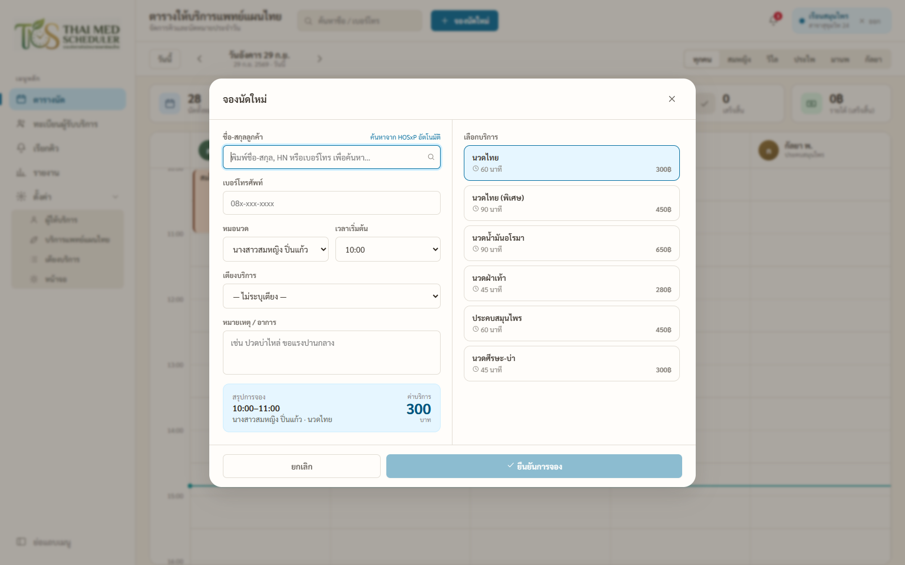
การแจ้งเตือนคิวด่วน (เหลือเวลาไม่ถึง 15 นาที) จะมีแถบสีแดงเน้นพิเศษ พร้อมปุ่ม ไปหน้าเรียกคิว → ให้กดลัดไปจัดการได้ทันที และกด "อ่านทั้งหมด" เพื่อล้างตัวเลขแจ้งเตือนได้ทุกเมื่อ
คำถามที่พบบ่อย
ปัญหาที่พบได้บ่อยและวิธีแก้ไขเบื้องต้น
| อาการ | วิธีแก้ไข |
|---|---|
| ระบบขึ้นให้เชื่อมต่อ HOSxP ใหม่ทั้งที่เพิ่งใช้เมื่อวาน | Session ID มีอายุใช้งานจำกัด และคุกกี้ที่จดจำไว้ครบ 7 วันแล้ว — ขอ Session ID ใหม่จากระบบ HOSxP แล้วเชื่อมต่ออีกครั้ง |
| หน้า "ผู้ให้บริการ" หรือ "บริการแพทย์แผนไทย" ขึ้นข้อความโหลดข้อมูลไม่สำเร็จ | กดปุ่ม "โหลดใหม่" อีกครั้ง หากยังไม่สำเร็จ ให้แจ้งฝ่ายดูแลระบบตรวจสอบการเชื่อมต่อ HOSxP API |
| เรียกคิวแล้วไม่มีเสียงพูด | ตรวจสอบว่าลำโพงเครื่องเปิดอยู่และมีอินเทอร์เน็ต ระบบต้องใช้อินเทอร์เน็ตในการสังเคราะห์เสียงพูดภาษาไทย |
| จอแสดงคิวหน้าร้านไม่อัปเดตตามหน้าเรียกคิว | เปิดจอแสดงคิวด้วยปุ่ม "จอแสดงคิว" จากในระบบ (ไม่ใช่เปิด URL แยกเอง) และให้ทั้งสองหน้าต่างอยู่ในเบราว์เซอร์เครื่องเดียวกัน |
| ต้องการเพิ่ม/แก้ไขชื่อผู้ให้บริการหรือรายการบริการ | ทำที่ระบบ HOSxP โดยตรง ระบบนี้จะดึงข้อมูลล่าสุดมาแสดงให้อัตโนมัติ (หน้าผู้ให้บริการ/บริการเป็นหน้าแสดงผลอย่างเดียว) |